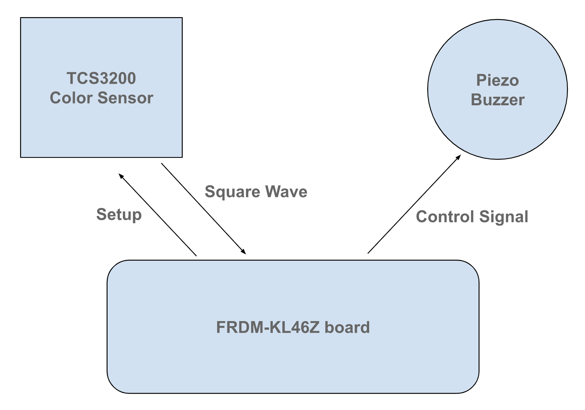

Introduction
In this project, we designed a machine that could transform color into sound, so that we can compose a song using different colors. Using RGB data measured by a color sensor, the FRDM board could send different control signals to the piezo buzzer thus making it play different frequency sounds.
In the perspective of society, this project offers a unique medium for artistic expression, enabling individuals to compose music based on colors.This will promote creativity, cultural enrichment, and personal well-being. Moreover, our project may enhance accessibility for individuals with visual impairments by allowing them to perceive and interact with various colors through sound, i.e. hearing the sound!
In designers’ perspective, we learned how to iteratively design a system through multiple design cycles, testing, and refining ideas based on the system’s feedback. We also get acquainted with the process of setting up hardwares and doing coding work after carefully learning the datasheet and reference manual.
System Overview and diagram
As shown in the high-level diagram above, there are two main peripherals used: a color sensor and a buzzer. After setting up the color sensor, it will read color by using a 8x8 photodiode array, then using a current-to-frequency converter to output a 50% duty cycle square wave whose frequency is related to light intensity of that color, as shown in the figure below.
It can do this procedure for all three primary colors red, green, and blue, so by comparing the ratio between RGB readings we would be able to distinguish more than 3 colors. Then, with the RGB data, we can then send control signals to the piezo buzzer to generate a certain frequency sound corresponding to the detected color.
Here, the key points are: 1. How to calculate the frequency of the received square wave; 2. What should be the appropriate RGB range for each color; 3. How to control the passive piezo buzzer. The first and last key points will be discussed in detail in the technical description section below, and the second point will be elaborated in the testing section.
Video
The video should have the right length (3-4 min, if shorter than 2 min or longer than 5 mins, we will deduct points) The video should be self-contained, i.e. understandable by someone who has not read your whole website.- Give a brief overview of the project.
- Show the system working.
- Describe some of the technical details.
- What would be the most interesting piece of information for your fellow students?
- Was there a super tricky bug?
- Something surprising you learned during the implementation?
- Did you come up with some super clever tests?
Technical description
Electronically, the TCS3200 color sensor utilizes photodiodes’ sensitivity to light to detect the intensity of a color. In short, when the intensity of a light is high (i.e. more of that color is present), the photodiodes would be forward biased more which allow more current to flow through. This DC current would then be used to power a crystal oscillator on the sensor to generate a square wave; the larger the current, the higher the frequency. This is the reason that allows us to determine the presence of a certain color by only looking at the frequency (or period) of the square wave. For the sensor to work correctly for our purposes, some calibration is required. All the calibration is done by adjusting the logic level of pins S0,1,2,3. First, the sensor allows the user to choose between a frequency scaling of 2%, 20%, and 100%. A higher frequency scaling implies a smaller response time or a faster measurement rate but risks losing accuracy and becoming more susceptible to environmental noise (tradeoff). For our purpose, we choose 20% since we are not interested in measuring any fast-moving object. This implies we need to set S0 to HIGH and S1 to LOW; this setup is made at the beginning of the program and will not be changed. Next, the sensor is not able to read all three RGB data at one time, so we also need to tell the sensor when to read which color by turning on the corresponding color filter. This is achieved by pin S2 and S3 (e.g. S2=LOW and S3=HIGH turns on the filter for color blue). This setup is initialized in the beginning but will keep changing throughout the program because we constantly need the updated information about the RGB data to make the correct decision on the color. Since the sensor outputs a digital square wave with its color information being encoded into its frequency, we should be able to communicate with it by monitoring the state of the OUT pin on the sensor, especially how long it stays high/low. In this case, we do not really care about the absolute time, but instead we are only interested in how the relative period is compared among R, G, B. This way, we use a counter that keeps incrementing while the OUT pin remains high/low which then allows us to use its value for comparison between RGB to know which component dominates. This approach requires us to know when the input is high/low which could be achieved by utilizing the interrupt flags. We set the interrupt flag to be triggered on either rising edge or falling edge and keep counting while no flag is set. After obtaining the RGB data, we have a series of if-statements comparing the relative RGB values and control the buzzer based on the result.
For the buzzer, we use a passive buzzer and control its sound frequency by turning it on and off at different rates. In order for it to produce a smooth sound without too much noise, it is important to turn it on and off continuously at a regular frequency. However, for our program, the buzzer is only turned on/off when we have determined the color which means we do not control the buzzer while we are taking the RGB measurements. This means there would be some hard-to-avoid irregularity in turning on/off the buzzer because the code for measuring RGB values has to be run every time before controlling the buzzer. To mitigate its negative effect, we come up with two solutions. First, whenever we have successfully identified the color and want the buzzer to beep, instead of turning it on/off for 1 time, we want to use a for-loop to do it twice which we believe should reduce some noise at some frequencies (intuitively, think it as buzzer is now interrupted less often). Indeed, this would add some extra delay, but such small delay is negligible and imperceptible to human ears since the code is run at extremely fast speed. Another way is to simply make the period longer (lower frequency) by adding more time between turning on and off. Sound with a larger period is less sensitive to variations or irregularities in the period and thus is less affected by such kinds of noise.
As an overall design review, we employ polling to keep checking the state of the OUT pin and therefore communicate with the sensor. This is acceptable in this case because we only have a few peripherals or I/O to interact with. But we believe it is also possible to implement interrupt in this case. One idea would be to keep counting in the main() function and use the value of the counter to do the same comparison in the interrupt handler and reset the counter right before we exit.
Testing
The primary testing strategy was to divide the project into two pairs with the FRDM board as the center: sensor-board and board-buzzer. If those two subparts could work appropriately, then we believe the process of combining them should be relatively easy. For the board-buzzer pair, we create a separate file just to test different ways of beeping a buzzer and to select the proper delay if we want a certain frequency, especially if we would like a musical note. For the sensor-board pair, the key part to test is whether we are able to check interrupt flags correctly and therefore keep track of the interval between each interrupt (i.e. period of the square wave). At the beginning of the project, this was tested with the sensor and an LED instead of a buzzer because a LED is a little easier to interact with and also more distinct to observe any output just by looking if it is lit up. At first, we just wanted the board to pick some data from the sensor no matter its actual value, so we toggle the LED whenever the RGB value is non-zero. Therefore, if we see LED blinks, we would know that the board is picking up non-trivial data from the sensor.
Next, for interpreting the sensor’s outputs, it is up to us to make the final decision to define what is the color being read. This step requires a lot of testing since we need to find out, given a color, how it corresponds to each of the RGB values. For example, the color purple probably has more red and blue than green which means a smaller R and B value but a larger G value. Repeating this procedure for different colors could potentially consume a long time and involves a lot of trial & error. To find a proper range, we break the code into small blocks based on the color, verify the correct functionality of individual parts, and then combine all the parts together and verify again as a whole. For each individual color, we first place the correct color in front and check if the buzzer beeps; if it does not, we adjust the RGB values in the if-statement and try again. We repeat this process until right at the point when the buzzer steadily beeps as a color is placed in front. It is important not to go too much beyond this point because otherwise we might have set a range so loose that the sensor might beep also for other unintended colors. We prevent this by also placing similar but slightly different colors in front to make sure the buzzer would not beep (e.g. blue v.s. cyan, red v.s. purple). Finally, we put all the blocks for each color back together as a final check to ensure the entire program also functions correctly.
Work Distribution
For this project, most of the work was done together, including coming up with the initial idea, studying the hardware datasheet, coding, and testing. Cheng devoted more time on debugging the code and Canwen spent more time on calibrating buzzer frequencies. For creating the webpage and the demo video, we splitted tasks and did them separately.